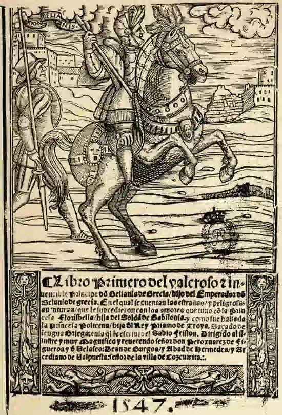

Las novelas de caballería son un género literario que floreció en Europa durante la Edad Media y el Renacimiento. Estas obras narran las aventuras de caballeros andantes, personajes heroicos que recorren el mundo en busca de gloria, amor y justicia. Las historias están llenas de batallas épicas, hechizos mágicos, criaturas fantásticas y escenarios exóticos,
El protagonista es un caballero noble, valiente, fuerte y virtuoso, defensor de la justicia y el amor.
El caballero se enfrenta a pruebas y desafíos fantásticos, como luchar contra monstruos, rescatar princesas y superar obstáculos mágicos.
El caballero idealiza a su dama y lucha por su amor, siguiendo el código del amor cortés.
La obra exalta valores como el honor, la lealtad, la justicia y la cortesía.
La historia se desarrolla en un mundo medieval fantástico, con elementos mágicos y criaturas mitológicas.
La narración se compone de una serie de episodios independientes, aunque relacionados entre sí.
Las novelas de caballerías recogen y reelaboran elementos de la tradición oral, como cuentos populares y leyendas.
| Nombre de la obra y Año de publicación | Autor | De qué trata | Imagen |
|---|---|---|---|
| Amadís de Gaula (1508) | Garci Rodríguez de Montalvo | Narra las aventuras del caballero Amadís de Gaula, su amor por la princesa Oriana y sus enfrentamientos contra enemigos formidables. | |
| Tirant lo Blanc (1490) | Joanot Martorell | Relata las hazañas de Tirant lo Blanc, un caballero valenciano que lucha por la conquista de Rodas y el amor de la princesa Carmesina. | |
| Belianís de Grecia (1533) | Jerónimo Fernández | Narra las aventuras de Belianís de Grecia, hijo del emperador romano Prïamo, y sus conquistas en Oriente. |  |
https://www.cervantesvirtual.com/portales/libros_de_caballerias/presentacion/
https://www.unprofesor.com/lengua-espanola/novela-de-caballeria-caracteristicas-y-ejemplos-3870.html
https://www.revista.unam.mx/vol.16/num8/art68/